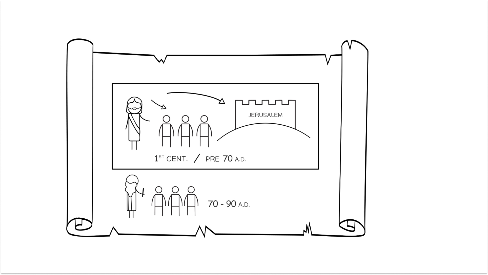

Diagrama de linha que ilustra a transição do século I do judaísmo e do cristianismo em torno de Jerusalém antes e depois de 70 d.C. Crédito: Tim Mackie.Line-art diagram illustrating the 1st-century shift of Judaism and early Christianity around Jerusalem before and after 70 CE. Credit: Tim Mackie.
Assim como o sermão começou com três conjuntos de três bem-aventuranças e três imagens esperançosas que descreviam a antiga vocação dos discípulos de Jesus (5:3-16), agora o sermão conclui com três advertências que equilibram a introdução. Aqui, Jesus desafiará os seus ouvintes a levar as suas palavras a sério, pois uma decisão de alto risco é colocada diante deles. Devemos lembrar a localização histórica e social das advertências de Jesus.Just as the sermon began with three sets of three blessings and three hopeful images that described the ancient vocation of Jesus’ disciples (5:3-16), now the sermon concludes with three warnings that balance the introduction. Here, Jesus will challenge his listeners to take his words seriously as a high-stakes decision is placed before them. We must remember the historical and social location of Jesus’ warnings.
"Jesus… previu que o juízo cairia sobre a nação em geral e sobre Jerusalém em particular. Isto é, ele reinterpreta uma crença judaica padrão (o juízo vindouro que cairia sobre as nações) em termos de um juízo vindouro que cairia sobre um Israel impenitente. Os grandes profetas fizeram exatamente o mesmo. Jerusalém, sob o seu regime presente, tinha-se tornado Babilônia. […] Jesus parece ter adotado o tema de João, que predisse a 'ira vindoura', dizendo que a membresia no Israel físico não era garantia de parte na era vindoura. Muito à maneira de Amós, ou com efeito de Qumran, João insistiu em redesenhar as fronteiras de Israel; para ele, só aqueles que se arrependessem e se submetessem ao batismo seriam incluídos. A história que Jesus contou sobre o futuro imediato de Israel parece ter-se desenvolvido diretamente desse ponto. […] Os avisos… são manifesta e obviamente, dentro do seu contexto histórico, avisos sobre um desastre nacional vindouro, envolvendo a destruição por Roma da nação, da cidade e do Templo. A história de juízo e vindicação que Jesus contou é muito semelhante à história contada pelo profeta Jeremias, invocando as categorias de desastre cósmico a fim de investir o desastre sociopolítico vindouro com o seu pleno significado teológico. A maneira 'normal' de ler estas passagens dentro da tradição cristã tem sido vê-las como referências a um juízo geral pós-morte no inferno; mas isto trai uma falta bastante profunda de compreensão histórica. […] Embora tais avisos, fazendo eco a uma tradição profética de séculos, pudessem em princípio ter sido articulados em qualquer momento da história de Israel, os próprios avisos de Jesus carregavam uma referência constante à geração presente. […] Jesus parece ter enfatizado 'os sinais dos tempos': a história que ele contava não era sobre alguma verdade geral ou abstrata, da qual o momento presente era apenas um exemplo. A sua mensagem era especificamente dirigida àquele exato momento da história de Israel.""Jesus … predicted that judgment would fall on the nation in general and on Jerusalem in particular. That is to say, he reinterprets a standard Jewish belief (the coming judgment which would fall on the nations) in terms of a coming judgment which would fall on impenitent Israel. The great prophets had done exactly the same. Jerusalem, under its present regime, had become Babylon. … Jesus seems to have adopted the theme from John, who predicted ‘wrath to come’, saying that membership in physical Israel was no guarantee of a share in the age to come. Very much in the mold of Amos, or indeed of Qumran, John insisted on redrawing the boundaries of Israel; for him, only those who repented and submitted to baptism would be included. The story Jesus told about Israel’s immediate future seems to have developed directly from this point. … The warnings … are manifestly and obviously, within their historical context, warnings about a coming national disaster, involving the destruction by Rome of the nation, the city and the Temple. The story of judgment and vindication which Jesus told is very much like the story told by the prophet Jeremiah, invoking the categories of cosmic disaster in order to invest the coming socio-political disaster with its full theological significance. The ‘normal’ way of reading these passages within the Christian tradition has been to see them as references to a general post mortem judgment in hell; but this betrays a fairly thorough lack of historical understanding. … [Even] though such warnings, echoing as they did a centuries-long prophetic tradition, could in principle have been articulated at any time in Israel’s history, Jesus’ own warnings carried a constant reference to the present generation. … Jesus seems to have stressed ‘the signs of the times’: the story he was telling was not about some general or abstract truth, of which the present moment just happened to be one example. His message was specifically directed to that very moment in Israel’s history.”
Wright, N. T. (1997). Jesus and the Victory of God (Christian Origins and the Question of God). Fortress Press. 323–325.Wright, N. T. (1997). Jesus and the Victory of God (Christian Origins and the Question of God). Fortress Press. 323–325.
13 Entrai pelo portão estreito; porque largo é o portão, e amplo o caminho que conduz à ruína, e muitos são os que por ele entram. 14 Pois quão estreito é o portão, e constrito o caminho que conduz à vida, e poucos são os que o encontram!13 Enter through the narrow gate. A Because wide is the gate, and broad is the road that leads to ruin, and those who enter through it are many. a' 14 How narrow is the gate, and constricted, is the road that leads to life, and those who find it are few.
Dentro da Bíblia Hebraica, há uma metáfora tradicional dos dois caminhos (os dois modos) que expressa as duas trajetórias de vida que uma pessoa pode experimentar: uma que conduz à vida, e uma que conduz à ruína. No saber bíblico, a ênfase pode estar no cumprimento presente ou futuro da trajetória de vida de uma pessoa.Within the Hebrew Bible, there is a traditional metaphor of the two paths (the two ways) that express the two life-trajectories a person can experience, one that leads to life, and one that leads to ruin. In biblical wisdom, the emphasis can be on the present or future fulfillment of a person’s life trajectory.
Pois o Senhor conhece o caminho dos justos, mas o caminho dos ímpios perecerá.For the LORD knows the way of the righteous, but the way of the wicked will perish.
Como são bem-aventurados aqueles cujo caminho é irrepreensível, que andam na lei do Senhor!How blessed are those whose way is blameless, who walk in the law of the LORD.
6 Pois o Senhor dá a sabedoria; da sua boca procedem o conhecimento e o entendimento. … 8 Ele guarda as veredas da justiça e preserva o caminho dos seus santos. … 11 O discernimento o guardará, o entendimento o watchará, 12 para o livrar do caminho do mal, do homem que fala perversidades, 13 daqueles que deixam as veredas da retidão para andar nos caminhos das trevas.6 For the LORD gives wisdom; from his mouth come knowledge and understanding. … 8 Guarding the paths of justice, and he preserves the way of his godly ones. … 11 Discretion will guard you, understanding will watch over you, 12 to deliver you from the way of evil, from the man who speaks perverse things; 13 from those who leave the paths of uprightness to walk in the ways of darkness.
Há um caminho que parece direito ao homem, mas o seu fim é o caminho da morte.There is a way which seems right to a man, but its end is the way of death.
A imagem dos dois caminhos é desenvolvida a partir de uma visão da realidade segundo a qual todas as trajetórias conduzem ou à vida e ao florescimento ou à ruína e destruição.The imagery of the two paths is developed out a view of reality that all trajectories lead to either life and flourishing or ruin and destruction.
Pois não abandonarás a minha alma ao Sheol; não permitirás que o teu fiel veja a cova. Far-me-ás conhecer a vereda da vida; na tua presença há plenitude de alegria; à tua direita há delícias para sempre.for you will not abandon my soul to Sheol; you will not give your faithful one to see the grave. You will make known to me the path of life, before your face is fullness of joy, at your right hand are pleasures forever.
Sonda-me, ó Deus, e conhece o meu coração; prova-me e conhece os meus ansiosos pensamentos; e vê se há em mim algum caminho doloroso, e guia-me pelo caminho da eternidade.Search me, O God, and know my heart; try me and know my anxious thoughts; and see if there be any hurtful way in me, and lead me in the way of the age.
Os seus pés correm para o mal, e se apressam a derramar sangue inocente; os seus pensamentos são pensamentos de iniquidade; assolação e ruína estão nas suas estradas. Não conhecem o caminho da paz, e não há justiça nos seus passos; torceram as suas veredas, quem por elas anda não conhece a paz.Their feet run to evil, and they are quick to shed innocent blood; their thoughts are thoughts of iniquity, devastation and destruction are in their highways. They do not know the way of peace, and there is no justice in their tracks; they have made their paths crooked, whoever treads on them does not know peace.
Estendi as minhas mãos o dia todo para um povo rebelde, que anda pelo caminho que não é bom, seguindo os seus próprios pensamentos; um povo que continuamente me provoca à face, que oferece sacrifícios em jardins e queima incenso sobre tijolos.I have spread out my hands all day long to a rebellious people, who walk in the way which is not good, following their own thoughts, a people who continually provoke me to my face, offering sacrifices in gardens and burning incense on bricks.
Estes textos foram todos desenvolvidos a partir de uma imagem fundamental na história do jardim do Éden, a saber, a menção de uma "vereda" que saía e entrava do jardim, bem como a "porta" que marca o limite.These texts are all developed out of a foundational image in the garden of Eden story, namely the mention of a "path" in and out of the garden, as well as the "gate/door" that marks the boundary.
Assim, expulsou o homem; e, a leste do jardim do Éden, colocou os querubins e a espada flamejante que se voltava para todos os lados, para guardar o caminho que conduz à árvore da vida.So he drove the man out; and at the east of the garden of Eden he stationed the cherubim and the flaming sword which turned every direction to guard the way to the tree of life.
Se fazes o bem, não haverá exaltação? E se não fizeres o bem, o pecado é um agachado à porta, e o seu desejo é por ti, mas tu podes dominá-lo.If you do good, won’t there be exaltation? And if you don’t do good, sin is a croucher at the door, and its desire is for you, but you can rule it.
Sair "pela porta" significa deixar o Éden para a terra do pó e da morte. Entrar "pela porta para dentro" significa entrar no Éden. Estas duas imagens — a porta e o caminho que conduzem para fora ou para dentro do Éden — parecem estar na fonte destas imagens bíblicas dos dois portões e dos dois caminhos dentro da Bíblia Hebraica. Se assim é, faz todo o sentido que Jesus recorresse a estas imagens fundamentais como a advertência principal.To go “out through the door” means leaving Eden into the land of dust and death. To go “inside through the door” means entering Eden. These two images—the gate-door and the path that both lead out of or into Eden—seem to lie at the fountainhead of these biblical images of the two gates and the two paths within the Hebrew Bible. If that is so, it makes good sense that Jesus would draw on these foundational images as the lead warning.
A porta do Éden é um motivo que começa com Gênesis 3:22-24 e 4:7, com a "porta" do Éden sendo descrita como uma "entrada" ou um "portão". Esta imagem é desenvolvida por todo o Torá, à medida que outros lugares semelhantes ao Éden são frequentemente marcados por uma entrada/portão. A porta da arca (Gênesis 6:14 "põe a porta da arca no seu lado", e 6:17, 20 "estabelecerei a minha aliança convosco, e entrareis na arca… para preservar a vida"): dentro da porta há resgate e vida, fora da porta há ruína e morte. A porta da casa de Ló em Sodoma (Gênesis 19:6, 11): do lado de fora da porta há escuridão e cegueira; do lado de dentro da porta há segurança, refúgio e preservação da vida. A rampa de céu-sobre-a-terra que Jacó encontra em Betel é chamada de "portão dos céus" (Gênesis 28:17). A casa na Páscoa: do lado de dentro da porta, com o sangue, há a preservação da vida (Êxodo 12:22-23); do lado de fora da porta há morte. O tabernáculo: no limite do átrio do tabernáculo está a "entrada" (Êxodo 26:36, 29:4), também chamada "portão" (Êxodo 27:16, 35:17, 38:15), pela qual só sacerdotes e ofertantes puros podem entrar.The door of Eden is a motif that begins with Genesis 3:22-24 and 4:7, with Eden’s “gate” being described as an “entrance door” or a “gate”. This image is developed throughout the Torah, as other Eden-like places are often marked by a door/gate entrance. The door of the ark (Gen. 6:14 “place the door of the ark in the side of it” and 6:17, 20 “I will establish my covenant with you and you will enter into the ark … to preserve life”): Inside the door is rescue and life, outside the door is ruin and death. The door of Lot’s house in Sodom (Gen. 19:6, 11): On the outside of the door is darkness and blindness, on the inside of the door is safety, refuge, and preservation of life. The Heaven-on-Earth stair-ramp that Jacob encounters at Bethel is called “the gate of heaven” (Gen. 28:17). The house on Passover: On the inside of the door with the blood is the preservation of life (Exod. 12:22-23), on the outside of the door is death. Tabernacle: At the boundary of the tabernacle courtyard is the “doorway” (Exod. 26:36, 29:4), also called “the gate” (Exod. 27:16, 35:17, 38:15) through which only priests and pure offerers may come.
A imagem de um portão da morte aparece ocasionalmente na Bíblia Hebraica e na literatura do Segundo Templo.The imagery of a door-gate of death appears occasionally in the Hebrew Bible and in Second Temple literature.
Insensatos, por causa do seu caminho rebelde e por causa das suas iniquidades, foram afligidos. A sua alma abominou todo tipo de comida, e chegaram perto das portas da morte.Fools, because of their rebellious way, and because of their iniquities, were afflicted. Their soul abhorred all kinds of food, and they drew near to the gates of death.
Entraste tu nas fontes do mar, ou andaste nas encovas do abismo? Foram-te reveladas as portas da morte, ou viste as portas da profunda escuridão?Have you entered into the springs of the sea or walked in the recesses of the deep? Have the gates of death been revealed to you, or have you seen the gates of deep darkness?
Também te digo que tu és Pedro, e sobre esta pedra edificarei a minha igreja; e as portas da sepultura (grego: hades) não a prevalecerão.I also say to you that you are Peter, and upon this rock I will build my church; and the gates of the grave (Greek: hades) will not overpower it.
e [os israelitas] clamaram em altíssima voz, suplicando ao Soberano sobre todo o poder que se manifestasse e se mostrasse misericordioso para com eles, pois estavam agora às portas da morte.and [the Israelites] cried out in a very loud voice, imploring the Ruler over every power to manifest himself and be merciful to them, as they stood now at the gates of death.
“Pois ele lhe mostrou muitos avisos, juntamente com os caminhos da Lei e o fim dos tempos, como também a ti; e ainda mais, a semelhança de Sião com as suas medidas, que havia de ser feita segundo a semelhança do santuário presente. Mas também lhe mostrou, naquele tempo, as medidas do fogo, as profundezas do abismo, o peso dos ventos, o número das gotas de chuva, a supressão da ira, a abundância da longanimidade, a verdade do juízo, a raiz da sabedoria, a riqueza do entendimento, a fonte do conhecimento, a altura do ar, a grandeza do Paraíso, o fim dos períodos, o princípio do dia do juízo, o número das ofertas, os mundos que ainda não vieram, a boca do geena, o lugar da vingança, o lugar da fé, a região da esperança,”“For he showed him many warnings together with the ways of the Law and the end of time, as also to you; and then further, also the likeness of Zion with its measurements which was to be made after the likeness of the present sanctuary. But he also showed him, at that time, the measures of fire, the depths of the abyss, the weight of the winds, the number of the raindrops, the suppression of wrath, the abundance of long-suffering, the truth of judgment, the root of wisdom, the richness of understanding, the fountain of knowledge, the height of the air, the greatness of Paradise, the end of the periods, the beginning of the day of judgment, the number of offerings, the worlds which have not yet come, the mouth of gehenna, the standing place of vengeance, the place of faith, the region of hope,”
Charlesworth, James H. (1983). The Old Testament Pseudepigrapha. Yale University Press. 642.Charlesworth, James H. (1983). The Old Testament Pseudepigrapha. Yale University Press. 642.
“Eles reconhecem a justiça do seu castigo e dizem diante dele: ‘Senhor do mundo, julgaste bem, condenaste bem, atribuíste devidamente o Geena para os ímpios e o Jardim do Éden para os justos.’ Mas será assim? E não disse R. Simeão b. Laqish: ‘Mesmo à porta do Geena os ímpios não se arrependem’?”“They acknowledge the justice of their punishment and say before him, ‘Lord of the world, you have judged well, you have condemned well, you have properly assigned Gehenna for the wicked and the Garden of Eden for the righteous.’ But is that so? And didn’t R. Simeon b. Laqish say, ‘Even at the gate of Gehenna the wicked don’t repent’”
Neusner, Jacob (2011). The Babylonian Talmud: A Translation and Commentary. Hendrickson Publishers. 92–93.Neusner, Jacob (2011). The Babylonian Talmud: A Translation and Commentary. Hendrickson Publishers. 92–93.
Por outro lado, o portão para a vida também aparece na literatura judaica do Segundo Templo.Conversely, the gate to life also appears in Second Temple Jewish literature.
Bem-aventurados aqueles que lavam as suas vestes, para que tenham direito à árvore da vida e entrem pela porta na cidade. Lá fora estão os cães, os feiticeiros, os que se prostituem, os homicidas, os idólatras e todo aquele que ama e pratica a mentira.Blessed are those who wash their robes, so that they may have the right to the tree of life, and may enter by the gates into the city. Outside are the dogs and the sorcerers and the immoral persons and the murderers and the idolaters, and everyone who loves and practices lying.
“Mas eu fiz o mundo, e não quero destruir nenhum deles; mas adio a morte do pecador até que ele se converta e viva. Agora, conduzi Abraão ao primeiro portão do céu, para que ali ele veja os juízos e as recompensas e se arrependa pelas almas dos pecadores que ele destruiu.”“But I made the world, and I do not want to destroy any one of them; but I delay the death of the sinner until he should convert and live. Now conduct Abraham to the first gate of heaven, so that there he may see the judgments and the recompenses and repent over the souls of the sinners which he destroyed.”
Charlesworth, James H. (1983). The Old Testament Pseudepigrapha. Yale University Press. 887-888.Charlesworth, James H. (1983). The Old Testament Pseudepigrapha. Yale University Press. 887-888.
A comunidade de Qumran desenvolveu esta metáfora em múltiplas direções:The Qumran community developed this metaphor in multiple directions:
“Ele criou o homem para governar o mundo e colocou nele dois espíritos, para que ele andasse com eles até o momento da sua visitação: são os espíritos da verdade e do engano. Da fonte de luz procedem as gerações da verdade, e da fonte das trevas procedem as gerações do engano. E na mão do Príncipe das Luzes está o domínio sobre todos os filhos da justiça; eles andam nos caminhos de luz. E na mão do Anjo das Trevas está o domínio total sobre os filhos do engano; eles andam nos caminhos das trevas.”“He created man to rule the world and placed within him two spirits so that he would walk with them until the moment of his visitation: they are the spirits of truth and of deceit. From the spring of light stem the generations of truth, and from the source of darkness the generations of deceit. And in the hand of the Prince of Lights is dominion over all the sons of justice; they walk on paths of light. And in the hand of the Angel of Darkness is total dominion over the sons of deceit; they walk on paths of darkness.”
García Martínez, Florentino & Tigchelaar, Eibert J. C. (1997-1998). “The Dead Sea Scrolls Study Edition (translations)”. Wm. B. Eerdmans Publishing Co. 75.García Martínez, Florentino & Tigchelaar, Eibert J. C. (1997-1998). “The Dead Sea Scrolls Study Edition (translations)”. Wm. B. Eerdmans Publishing Co. 75.
Outra literatura judaica do Segundo Templo também desenvolveu a imagem.Other Second Temple Jewish literature developed the image as well.
“Deus concedeu dois caminhos aos filhos dos homens, duas mentalidades, duas linhas de ação, dois modelos e dois objetivos. Em conformidade, tudo está em pares, um defronte do outro. Os dois caminhos são o bem e o mal; a respeito deles há em nossos peitos duas disposições que escolhem entre eles”“God has granted two ways to the sons of men, two mind-sets, two lines of action, two models, and two goals. Accordingly, everything is in pairs, the one over against the other. The two ways are good and evil; concerning them are two dispositions within our breasts that choose between them”
Charlesworth, James H. (1983). The Old Testament Pseudepigrapha. Yale University Press. 816-817.Charlesworth, James H. (1983). The Old Testament Pseudepigrapha. Yale University Press. 816-817.
Um dos mais antigos documentos cristãos após os escritos apostólicos é o Didache, que começa do seguinte modo.One of the earliest Christian documents after the apostolic writings is the Didache, which begins as follows.
“1. Há dois caminhos, um da vida e um da morte, e há grande diferença entre estes dois caminhos. 2. Ora, este é o caminho da vida: primeiro, ‘amarás a Deus, que te fez’; segundo, ‘ao teu próximo como a ti mesmo’; e ‘tudo o que não quiseres que te aconteça, não faças a outro’.”“1. There are two ways, one of life and one of death, and there is a great difference between these two ways. 2. Now this is the way of life: first, ‘you shall love God, who made you’; second, ‘your neighbor as yourself’; and ‘whatever you do not wish to happen to you, do not do to another.’”
Holmes, Michael William (1999). The Apostolic Fathers: Greek Texts and English Translations, Updated ed.. Baker Books. 251.Holmes, Michael William (1999). The Apostolic Fathers: Greek Texts and English Translations, Updated ed.. Baker Books. 251.
A literatura rabínica posterior também desenvolveu a imagem.Later Rabbinic Literature also developed the image.
“Ele disse-lhes: ‘Ide e vede qual é o caminho reto a que o homem deve apegar-se.’ – R. Eliezer diz: ‘Um espírito generoso.’ – R. Josué diz: ‘Um bom amigo.’ – R. Yose diz: ‘Um bom vizinho.’ – R. Simeão diz: ‘Previdência.’ – R. Eleazar diz: ‘Boa vontade.’ Ele disse-lhes: ‘Prefiro a opinião de R. Eleazar b. Arakh, porque no que ele diz está incluído tudo o que vós dizeis.’ Ele disse-lhes: ‘Saí e vede qual é o mau caminho, que o homem deve evitar.’ – R. Eliezer diz: ‘Inveja.’ – R. Josué diz: ‘Um mau amigo.’ – R. Yose diz: ‘Um mau vizinho.’ – R. Simeão diz: ‘Falta de pagamento de um empréstimo.’ … – R. Eleazar diz: ‘Má vontade.’”“He said to them, ‘Go and see what is the straight path to which someone should stick.’ – R. Eliezer says, ‘A generous spirit.’ – R. Joshua says, ‘A good friend.’ – R. Yose says, ‘A good neighbor.’ – R. Simeon says, ‘Foresight.’ – R. Eleazar says, ‘Good will.’ He said to them, ‘I prefer the opinion of R. Eleazar b. Arakh, because in what he says is included everything you say.’ He said to them, ‘Go out and see what is the bad road, which someone should avoid.’ – R. Eliezer says, ‘Envy.’ – R. Joshua says, ‘A bad friend.’ – R. Yose says, ‘A bad neighbor.’ – R. Simeon says, ‘Defaulting on a loan.’ … – R. Eleazar says, ‘Bad will.’”
Charlesworth, James H. (1983). The Old Testament Pseudepigrapha. Yale University Press. 676-677.Charlesworth, James H. (1983). The Old Testament Pseudepigrapha. Yale University Press. 676-677.
No entanto, há vários textos judaicos do Segundo Templo e posteriores que veem na imagem dos dois caminhos uma evocação do portão e do caminho que saem e entram no jardim do Éden.However, there are a number of Second Temple and later Jewish texts that see in the two paths imagery a recall of the gate and path into and out of the garden of Eden.
“Pois eu fiz o mundo por causa deles, e quando Adão transgrediu as minhas ordens o que fora feito foi julgado. Os caminhos deste mundo se tornaram estreitos, dolorosos e difíceis; são poucos e maus, cheios de perigos e carregados de grandes tribulações, mas os caminhos do mundo maior são espaçosos e seguros e produzem o fruto da imortalidade. Se, portanto, os vivos não entrarem realmente [por] estas coisas estreitas e vãs, não poderão obter as coisas que lhes estão reservadas.”“For I did make the world for their sakes and when Adam transgressed my orders what was made was judged. The ways of this world have been made narrow, painful and difficult; they are few and evil, full of perils and fraught with great hardships, but the ways of the greater world are spacious and secure and produce the fruit of immortality. If, therefore, those alive do not really enter [through] these narrow and vain things they will be unable to obtain the things stored up [for them].”
Myers, Jacob M. (2008). I and II Esdras: A New Translation (The Anchor Bible, vol. 42). Yale University Press. 206.Myers, Jacob M. (2008). I and II Esdras: A New Translation (The Anchor Bible, vol. 42). Yale University Press. 206.
“R. Akiva: As palavras dAquele que trouxe o mundo à existência não devem ser contestadas, pois todas elas estão de acordo com a verdade e a justiça. R. Pappus expôs (Gênesis 3:22) (‘e o Senhor Deus disse:) Eis que o homem se tornou como um de nós’ — como um dos anjos ministradores. R. Akiva: ‘Basta, Pappus!’ Pappus: ‘E como a entende?’ R. Akiva: O Santíssimo, bendito seja, deu-lhe dois caminhos: um da vida e um da morte, e ele escolheu o caminho da morte.”“R. Akiva: The words of Him who brought the world into being are not to be contested, for all of them are in accordance with truth and justice. R. Pappus expounded (Genesis 3:22) (‘and the Lord G d said:) Behold, the human has become like one of us’ — as one of the ministering angels. R. Akiva: ‘Enough Pappus!’ Pappus: ‘And how do you understand it?’ R. Akiva: The Holy One Blessed be He gave him two paths: one of life and one of death, and he chose the path of death.”
Mekhilta de Rabbi Yishmael sobre Êxodo 14:29.Mekhilta de Rabbi Yishmael on Exodus 14:29.
“diante de mim estão dois caminhos, um para o Jardim do Éden e outro para o Geena, e não sei por qual caminho serei conduzido,”“before me are two paths, one to the Garden of Eden and the other to Gehenna, and I do not know by which path I shall be brought,”
Neusner, Jacob (2011). The Babylonian Talmud: A Translation and Commentary. Hendrickson Publishers. 189.Neusner, Jacob (2011). The Babylonian Talmud: A Translation and Commentary. Hendrickson Publishers. 189.
A frase em Mateus 7:14, estreito é o caminho, em grego é τεθλιμμένη ἡ ὁδὸς / tethlimmene he-hodos. O particípio deriva da raiz θλίβω / thlibo, que literalmente significa apertar com força contra ou restringir, e metaforicamente significa causar dificuldade a, oprimir.The phrase in Matthew 7:14, narrow is the way in Greek is τεθλιμμένη ἡ ὁδὸς / tethlimmene he-hodos. The participle comes from the root θλίβω / thlibo, which literally means to press hard against or to constrict and metaphorically means to cause trouble for, to oppress.
O substantivo derivado deste verbo é θλῖψις / thlipsis — opressão, tribulação, perseguição —, que Mateus frequentemente usa para descrever a resistência hostil a Jesus e aos seus discípulos.The noun derived from this verb is θλῖψις / thlipsis oppression, tribulation, persecution, which Matthew often uses to describe hostile resistance to Jesus and his disciples.
Aquele em quem a semente foi semeada nos lugares pedregosos, este é o que ouve a palavra e logo a recebe com alegria; mas não tem raiz em si mesmo, senão que é apenas temporário, e, quando surge a thlipsis ou a perseguição por causa da palavra, logo se escandaliza.The one on whom seed was sown on the rocky places, this is the man who hears the word and immediately receives it with joy; yet he has no firm root in himself, but is only temporary, and when thlipsis or persecution arises because of the word, immediately he falls away.
Palavras-Chave Adaptadas pelo InstrutorKey Words Adapted by Teacher
Então, eles vos entregarão à thlipsis, e vos matarão, e sereis odiados por todas as nações por causa do meu nome.Then they will deliver you to thlipsis, and will kill you, and you will be hated by all nations because of my name.
Palavras-Chave Adaptadas pelo InstrutorKey Words Adapted by Teacher
Porque então haverá uma grande thlipsis, qual não houve desde o princípio do mundo até agora, nem tampouco haverá.For then there will be a great thlipsis, such as has not occurred since the beginning of the world until now, nor ever will.
Palavras-Chave Adaptadas pelo InstrutorKey Words Adapted by Teacher
Jesus está quase certamente ativando ambos os sentidos desta palavra ao descrever o caminho de seguir os seus ensinamentos:Jesus is almost certainly activating both meanings of this word in describing the way of following his teachings:
“Em oposição ao caminho largo está o caminho difícil (ὁδὸς τεθλιμμένη). Isso não significa, como geralmente se sustenta, simplesmente o caminho estreito e pequeno. É verdade que τεθλιμμένος pode significar tornado estreito, mas no sentido de que a passagem fica apertada, por exemplo, numa cidade ou numa casa quando há pessoas demais. Não é isso, porém, o que significa aqui, pois apenas poucas pessoas estão no caminho que conduz à vida. Assim, é melhor entender τεθλιμμένος como uma referência às tribulações (θλίψεις) que Mateus menciona em vários lugares para o tempo antes do fim (24:9, 21, 29; cf. 13:21). Já 5:10–12, 44 falam da perseguição que a comunidade experimenta. Portanto, o caminho para a vida está cheio de dificuldades.”“Opposite the broad way is the difficult way (ὁδὸς τεθλιμμένη). That does not mean, as is usually maintained, simply the narrow, small way. It is true that τεθλιμμένος can mean made narrow, but in the sense that the passage becomes crowded in, for example, a city or a house when there are too many people. That is not what it means here, however, because only a few people are on the way that leads to life. Thus it is better to understand τεθλιμμένος as a reference to the tribulations (θλίψεις) that Matthew mentions in several places for the time before the eschaton (24:9, 21, 29; cf. 13:21). Already 5:10–12, 44 speak of the persecution the community experiences. Thus the way to life is full of hardships.”
Luz, Ulrich (2007). Matthew 1–7: A Commentary (Hermeneia). Augsburg Fortress Publishing. 372.Luz, Ulrich (2007). Matthew 1–7: A Commentary (Hermeneia). Augsburg Fortress Publishing. 372.
Davies e Allison têm uma importante discussão sobre os muitos e os poucos em Mateus 7:14.Davies and Allison have an important discussion about the many and few in Matthew 7:14.
“A linha ‘poucos são os que o encontram’ é retórica, um convite a tomar uma decisão, ou … é um cálculo, uma declaração de que as massas da humanidade serão condenadas? A favor da segunda visão, poderia-se citar Mateus 22:14 (‘Muitos são chamados, mas poucos escolhidos’); mas contra ela poderia-se referir a Mateus 8:11 (‘Muitos virão do oriente e do ocidente’) e 20:28 (‘o Filho do Homem não veio para ser servido, mas para servir e dar a sua vida em resgate por muitos’). Se a questão não pode ser resolvida com certeza, é por duas razões. (1) Primeiro, Mateus não fez uma tentativa de ser sistemático e perfeitamente consistente ao preservar esses ditos. É por isso que um versículo pode falar da salvação de poucos, e outro de Jesus resgatar muitos. (2) Em segundo lugar, convém ter em mente o hábito semítico de fazer declarações hiperbólicas como meio de exortação. Considere Mishna Qiddushin 1:10: ‘Se um homem cumpre um único mandamento, ir-lhe-á bem, terá longos dias e herdará a terra; mas se ele negligenciar um único mandamento, ir-lhe-á mal, não terá longos dias e não herdará a terra’. Seria perverso tomar essas palavras literalmente. Elas são exortação. Uma pessoa deve agir como se o cumprimento de um mandamento significasse tudo. De modo semelhante, o verdadeiro sentido de Mt. 7:13–14 poderia ser: age como se apenas muito poucos entrarão pelos portões do paraíso. Sob essa leitura, seria um erro encontrar nesta passagem uma estimativa numérica objetiva. (Note que em Lc. 13:23–24 Jesus não responde diretamente à pergunta: Serão poucos os que serão salvos? Em vez disso, devolve a pergunta aos seus ouvintes, ordenando-lhes que se esforcem para entrar pela porta estreita.)”“Is [the line ‘few are those who find it’] rhetorical, an invitation to make a decision, or … is it a calculation, a statement that the masses of humanity will be damned? In favor of the second view, one could cite Matthew 22:14 (‘Many are called but few are chosen’); but against it one could refer to Matthew 8:11 (‘Many shall come from east and west’) and 20:28 (‘the son of Man did not come to be served but to serve and give his life as a ransom for many’). If the issue cannot be resolved with certainty, this is so for two reasons. (1) First, Matthew has not made an attempt to be systematic and perfectly consistent in preserving these sayings. This is why one verse can speak of the salvation of a few, another of Jesus ransoming many. (2) Secondly, one does well to keep in mind the Semitic habit of making hyperbolic declarations as a means of exhortation. Consider Mishna Qiddushin 1:10: ‘If a man performs a single commandment, it shall be well with him and he shall have length of days and shall inherit the land; but if he neglects a single commandment it shall be ill with him and he shall not have length of days and shall not inherit the land’. It would be perverse to take these words literally. They are exhortation. A person should act as if the fulfilment of one commandment meant everything. Similarly, the true meaning of Mt. 7:13–14 could be: act as if only a very few will enter through the gates of paradise. On this reading, one would do wrong to find in this passage an objective numerical estimate. (Note that in Lk. 13:23–24 Jesus does not directly answer the question, Will those who are saved be few? He instead throws the question back at his listeners by commanding them to strive to enter the narrow door.)”
Davies, W. D. & Allison Jr., Dale C. (2004). Matthew, vol. 1 (International Critical Commentary). T&T Clark International. 700-701.Davies, W. D. & Allison Jr., Dale C. (2004). Matthew, vol. 1 (International Critical Commentary). T&T Clark International. 700-701.
Há ditos de Jesus onde parece que ele tinha uma visão otimista de que a maioria da humanidade será acolhida no propósito salvífico de Deus. (Esses ditos sobre os muitos estão todos ligados a um texto-chave nos poemas do servo sofredor de Isaías.)There are sayings of Jesus where it seems he held an optimistic view that the majority of humanity will be enfolded within the saving purpose of God. (These sayings about the many are all hyperlinked to a key text in the suffering servant poems of Isaiah.)
Ouvindo isso, Jesus maravilhou-se e disse aos que o seguiam: “Em verdade vos digo que não encontrei tamanha fé em Israel. E digo-vos que muitos virão do oriente e do ocidente, e reclinar-se-ão à mesa com Abraão, Isaque e Jacó no reino dos céus;”Now when Jesus heard this, he marveled and said to those who were following, “Truly I say to you, I have not found such great faith with anyone in Israel. I say to you that many will come from east and west, and recline at the table with Abraham, Isaac and Jacob in the kingdom of heaven;”
assim como o Filho do Homem não veio para ser servido, mas para servir e dar a sua vida em resgate por muitos.just as the Son of Man did not come to be served, but to serve, and to give his life a ransom for many.
Agora é o juízo deste mundo; agora será expulso o príncipe deste mundo. E eu, quando for levantado da terra, atrairei todos os homens a mim mesmo.Now judgment is upon this world; now the ruler of this world will be cast out. And I, if I am lifted up from the earth, will draw all people to myself.
Pela angústia da sua alma, ele verá e ficará satisfeito; pelo seu conhecimento, o Justo, o meu Servo, justificará a muitos, pois ele levará as iniquidades deles.As a result of the anguish of his soul, he will see it and be satisfied; by his knowledge the Righteous One, my Servant, will declare righteous the many, as he will bear their iniquities.
Há outros ditos de Jesus onde parece que Jesus tinha uma visão pessimista do mesmo ponto.There are other sayings of Jesus where it seems that Jesus held a pessimistic view of the same point.
Porque muitos são chamados, mas poucos escolhidos.For many are called, but few are chosen.
Uma observação crítica sobre o tema acima é que seria fácil, neste ponto, pensar que as palavras de Jesus sobre os dois portões e os dois caminhos tratam da jornada de vida do indivíduo rumo a um destino de vida eterna com Deus após a morte, ou de ruína e destruição após a morte.One critical note about the above topic is that it would be easy at this point to think that Jesus’ words about the two gates and two roads are about the individual’s life-journey to a destiny of eternal life with God after death, or of ruin and destruction after death.
Isso seria compreender mal o cenário histórico dos avisos de Jesus e a sua referência. Jesus tinha uma compreensão clara do que significavam os seus avisos de juízo: um desastre vindouro para a nação de Israel que seria outra repetição do ciclo da aliança bíblica de infidelidade conduzindo à derrota às mãos de impérios opressores. Em outro lugar em Mateus, Jesus usa a mesma linguagem que encontramos em Mateus 5-7 para descrever a queda de Jerusalém às mãos dos romanos.This would be to misunderstand the historical setting of Jesus’ warnings and of their reference. Jesus had a clear understanding of what his warnings of judgment were about: a coming disaster for the nation of Israel that would be another repetition of the Scriptural covenant cycle of unfaithfulness leading to defeat at the hands of oppressive empires. Elsewhere in Matthew, Jesus uses the same language we find in Matthew 5-7 to describe the downfall of Jerusalem at the hands of the Romans.
1 Saindo Jesus do templo, ia retirando-se quando se aproximaram dele os seus discípulos para lhe mostrar as construções do templo. 2 Ele, porém, lhes disse: “Não vedes tudo isto? Em verdade vos digo que não ficará aqui pedra sobre pedra que não seja derribada.” 3 E, estando assentado no Monte das Oliveiras, aproximaram-se dele os discípulos, em particular, dizendo: “Dize-nos quando sucederão estas coisas e que sinal haverá da tua vinda e do fim do século?” 4 Jesus, pois, lhes respondeu e disse: “Acautelai-vos, que ninguém vos engane. 5 Porque muitos virão em meu nome, dizendo: ‘Eu sou o Cristo’, e enganarão a muitos.”1 Jesus came out from the temple and was going away when his disciples came up to point out the temple buildings to im. 2 And he said to them, “Do you not see all these things? Truly I say to you, not one stone here will be left upon another, which will not be torn down.” 3 As he was sitting on the Mount of Olives, the disciples came to him privately, saying, “Tell us, when will these things happen, and what will be the sign of your coming, and of the end of the age?” 4 And Jesus answered and said to them, “See to it that no one misleads you. 5 For many will come in my name, saying, ‘I am the Christ,’ and will mislead many.”
Ver Mateus 7:15-23See Matthew 7:15-23
Então, vos entregarão à tribulação, e vos matarão, e sereis odiados por todas as nações por causa do meu nome.Then they will deliver you to tribulation, and will kill you, and you will be hated by all nations because of my name.
Ver Mateus 5:10-12See Matthew 5:10-12
Nesse tempo, muitos se escandalizarão, e trairão uns aos outros, e uns aos outros se odiarão. E surgirão muitos falsos profetas e enganarão a muitos. E, por se multiplicar a iniquidade, o amor de muitos se esfriará. Mas aquele que perseverar até o fim, esse será salvo.At that time many will fall away and will betray one another and hate one another. Many false prophets will arise and will mislead many. Because lawlessness is increased, the love of many will grow cold. But the one who endures to the end, he will be saved.
Ver Mateus 7:13-14See Matthew 7:13-14
Porque então haverá uma grande tribulação, qual não houve desde o princípio do mundo até agora, nem tampouco haverá. E, se aqueles dias não fossem abreviados, nenhuma carne se salvaria; mas, por causa dos eleitos, aqueles dias serão abreviados.For then there will be a great trial, such as has not occurred since the beginning of the world until now, nor ever will. Unless those days had been cut short, no life would have been saved; but for the sake of the elect those days will be cut short.
Ver Mateus 7:13-14See Matthew 7:13-14
Porque surgirão falsos cristos e falsos profetas e farão grandes sinais e prodígios, de modo a enganar, se possível, até os eleitos.For false Christs and false prophets will arise and will show great signs and wonders, so as to mislead, if possible, even the elect.
Ver Mateus 7:15-23See Matthew 7:15-23
Pois, assim como foram os dias de Noé, será também a vinda do Filho do Homem. Porquanto, assim como, nos dias anteriores ao dilúvio, comiam e bebiam, casavam e davam-se em casamento, até o dia em que Noé entrou na arca, e não o perceberam, até que veio o dilúvio e os levou a todos, assim será também a vinda do Filho do Homem.For the coming of the Son of Man will be just like the days of Noah. For as in those days before the flood they were eating and drinking, marrying and giving in marriage, until the day that Noah entered the ark, and they did not understand until the flood came and took them all away; so will the coming of the Son of Man be.
Ver Mateus 7:24-27See Matthew 7:24-27
Perspectiva Narrativa de Mateus. Ilustração criada por Tim Mackie para a BibleProject Classroom: A Torá Messiânica (2024).Narrative Perspective of Matthew. Illustration created by Tim Mackie for BibleProject Classroom: The Messianic Torah (2024).
A quem Jesus está se dirigindo em seus avisos em Mateus 7:13-14? Como isso pode moldar a nossa compreensão das suas palavras e do que elas significam para nós hoje?Who is Jesus addressing in his warnings in Matthew 7:13-14? How might this shape our understanding of his words and what they mean for us today?